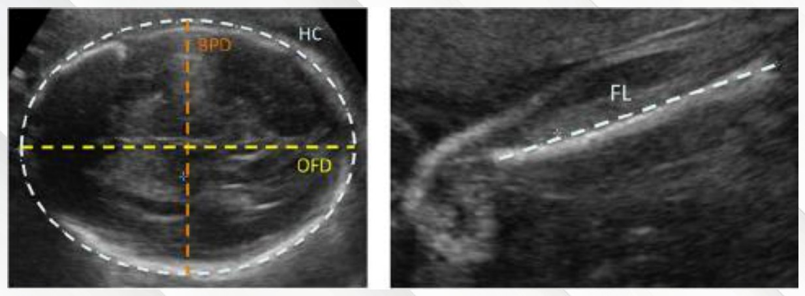
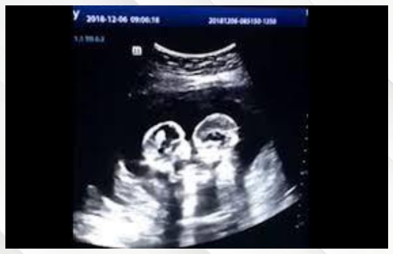
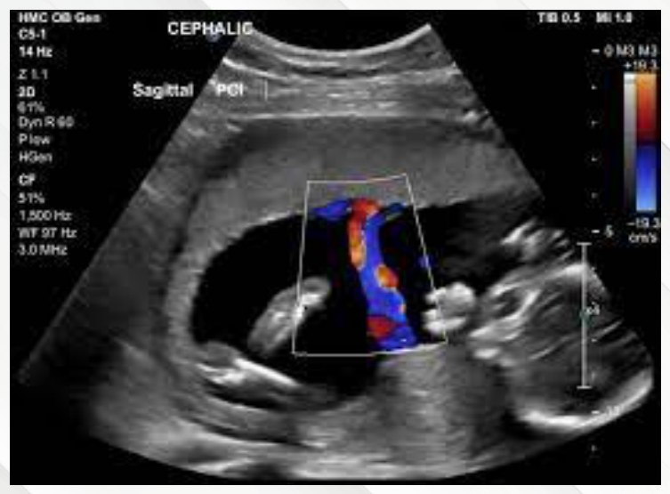
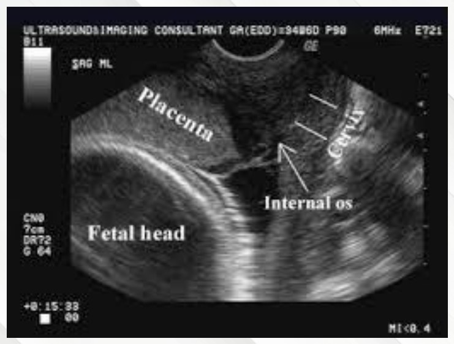
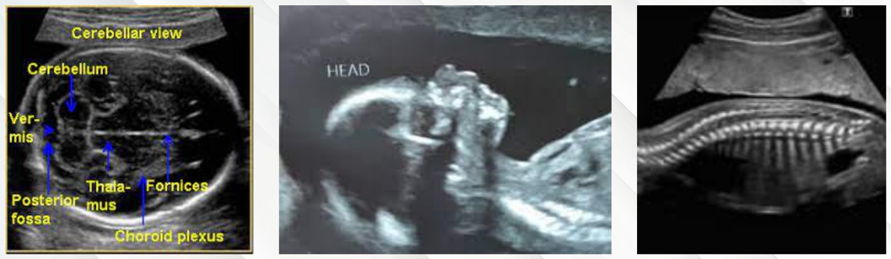
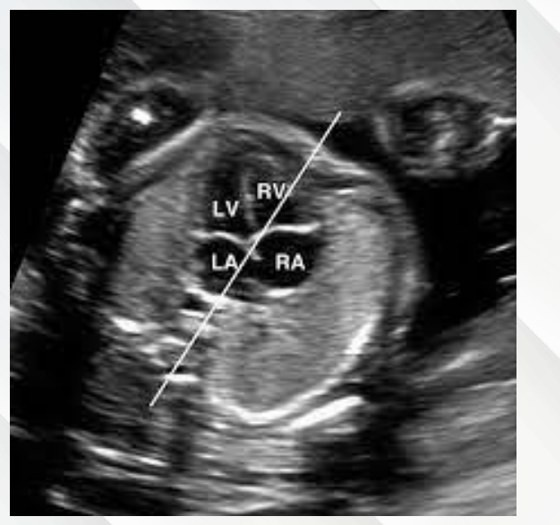
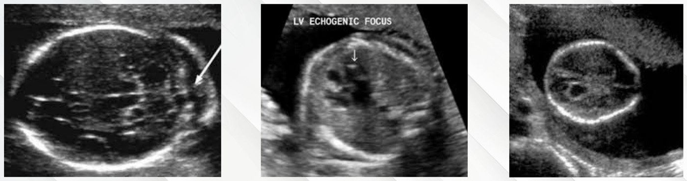

Second Trimester Ultrasound
- The indication is pregnancy. Every pregnant person in Canada should be offered an anatomy scan at 18–22 weeks — low-risk or not.
- Five jobs: dating (if not done) and growth · number of fetuses (and chorionicity) · placental location · screen the anatomy · look for soft markers.
- Placenta: which wall, and how close to the cervix — that is how a placenta previa is found.
- Birth defects affect 2–3% of pregnancies. Finding them guides counselling, further testing, and where and how the baby is delivered.
- Soft markers are not birth defects — they raise the risk of trisomy 21 or 18 and prompt an offer of further screening or testing.
- A biophysical profile is not part of this scan — that is a third-trimester well-being test.
Learning Objectives
- Review indications and results of appropriate ultrasound in pregnancy.
Dr. Harrison Banner, maternal-fetal medicine, 15 minutes. The second trimester is 14+0 to 27+6 weeks. First-trimester dating and genetic screening are covered in 5.12 and 4.16; third-trimester growth and well-being scans are not part of this module.
One Scan, Five Jobs
The anatomy scan (or “morphology study”) is a screening test offered to all. The module's knowledge check makes the point with four very different women: five prior losses, a stillbirth with a heart defect, a high-risk screen with a normal amniocentesis, and a healthy 21-year-old. Every one of them should have it.
| Job | What it means |
|---|---|
| 1. Dating and growth | Dates the pregnancy if there was no first-trimester scan; otherwise it is the baseline for monitoring growth later |
| 2. Number of fetuses | Confirms singleton or multiples; each fetus gets its own anatomy survey; chorionicity if not already known |
| 3. Placental location | Anterior or posterior — and its relationship to the cervix |
| 4. Anatomy screen | Rules out major congenital anomalies |
| 5. Soft markers | Findings that raise the risk of aneuploidy |
Dating, Growth and Multiples

The measurements behind “growth”. Four standard measurements go into a formula: biparietal diameter and head circumference (left), abdominal circumference, and femur length (right). The result is plotted against week-by-week charts to see whether the fetus is on track, ahead or behind. Dr. Banner is explicit that you don't need to know how the formula works.
Two heads, two anatomy surveys. A multiple pregnancy means a full survey for each fetus. Chorionicity (the type of twins) can be assigned here, but it is easier and more accurate in the first trimester. At 18–22 weeks it is mostly for people presenting late.Why a late first scan is only a fallback for dating: after 14 weeks the fetus flexes and turns, so a single length is unreliable and a composite estimate has a wider range. The first-trimester crown–rump length remains the gold standard (5.12).
The Placenta

Which wall? Here the placenta lies on the anterior wall. The red and blue is colour Doppler, showing flow in the umbilical cord. The scan also checks where the cord inserts, into the placenta and into the baby.
How close to the cervix? A transvaginal view (not part of the standard scan, added when the placenta looks low). The placenta runs over the internal os, beside the fetal head: a placenta previa. Placental location is the finding that matters most for later bleeding in pregnancy, and the one most often tested.Screening the Anatomy
2–3% of all pregnancies have a birth defect, from skin tags and extra digits to major heart defects. Not all can be seen antenatally, but more are found each year. Each organ system is checked against a standard list of views, every time.

Three of the standard views. The cerebellar view of the brain (cerebellum, vermis, posterior fossa, thalamus); the facial profile (nasal bone, nose, chin); and the distal spine, the image used to rule out spina bifida.
The four-chamber view: both ventricles and both atria in one cross-section of the thorax. The heart is also recorded as cine loops (short video clips) sweeping upward from this view, because it is a moving structure.| Why find an anomaly before birth (the module's check: all of these) |
|---|
| Counsel the parents about what to expect |
| Direct further investigation — focused ultrasound, other imaging, genetic testing, antenatally or after birth |
| Plan where and how to deliver — the level of care the baby will need |
| Allow the option of termination for severe or life-limiting anomalies |
Soft Markers
Soft markers are not birth defects. They are findings seen more often in fetuses with trisomy 21 or 18. A soft marker raises the risk above whatever earlier screening gave. It does not diagnose anything. It means further screening or testing is offered.

Three examples. Left: a thickened nuchal fold, measured at the back of the neck, associated with trisomy 21. Middle: an echogenic intracardiac focus, a spot in the heart as bright as bone, a small increase in trisomy 21 risk. Right: a choroid plexus cyst, a dark space where CSF is made, a slight increase in trisomy 18 risk.“More babies with Down syndrome have this finding than babies without it — it does not mean your baby has Down syndrome.” How much it matters depends on her prior risk from first-trimester screening. That is why the same marker can lead to reassurance in one woman and an offer of NIPT or amniocentesis in another. The full list of soft markers and the testing options are in 4.16.
Built from Dr. Harrison Banner's “Second Trimester Ultrasound” module (15 min), its 19-slide deck and the module's three knowledge checks. All figures are slides from the deck; the closing 3D image is left out as decorative. The line on why a late first scan dates less precisely is added for these notes, from the first-trimester lecture (5.12). Auto-captions garbled his name as “Varner”, sonographic as “sonic pornographic”, chorionicity as “Korean SRT”, biometry as “biochemistry”, cine loops as “singing loops”, nuchal as “neutral”, echogenic intracardiac focus as “EKG into cardiac focus”, choroid plexus cyst as “core in Texas test” and trisomy 18 as “2018”; the slides were followed.